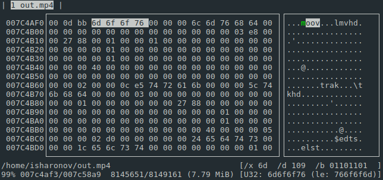

Содержание
Требуется написать код программы, который будет использовать изменённую точку входа main:
int main(const std::vector<std::string>& args)
{
cout << "argc = " << args.size() << endl;
for (auto& arg : args)
cout << "arg = " << arg << endl;
return 0;
}Для тестирования можно использовать online-компилятор http://coliru.stacked-crooked.com.
Ключевые слова: libc, crt0, линковка, RTLD_NEXT, стек, ELF-формат.
Перейти на решение.
Задача состоит в написании функции MultipleForLoop, которой передаются функтор действия и интервалы циклов. Пример вложенных циклов:
for (int i = 7; i < 44; ++i)
for (int j = 0; j < 10; ++j)
for (int k = 4; k < 50; k += 4)
func(i, j, k);То же самое через MultipleForLoop:
template<class Functor, class... Ranges>
void MultipleForLoop(Functor f, const Ranges&... ranges);
MultipleForLoop(func, boost::irange(7, 44), boost::irange(0, 10), boost::irange(4, 50, 4));Количество вложенных циклов не ограничено.
В процессе задачи следует ответить на вопрос: как подобная операция называется в математике?
Перейти на решение.
Необходимо показать, как именно происходит подсчёт. Полезно будет рассмотреть простой пример: 2 единицы и 2 нуля. В качестве бонуса на собеседовании будет задан долнительный вопрос.
Перейти на решение.
Необходимо составить архитектуру, которая будет описывать программу битового парсера любого контейнера. Программе на вход подаётся бинарный файл (медиа контейнер) и описание статического контейнера в каком-либо удобочитаемом формате (например, json). На выходе программа распечатывает те элементы контейнера, которые содержатся в описании.
Пример: распечатать ширину и высоту изображения в формате BMP. Пример описания:
{
"skip": 144,
"print": 32,
"print": 32
}Пример вызова программы:
$ ./bit_parser -c bmp-description.json picture.bmpСаму программу не надо писать, только её архитектуру. В архитектуру входят:
формат описаний;
ограничения на медиа контейнер (какие контейнеры могут быть распарсены, какие нет);
какие библиотеки будут использоваться;
какие классы/структуры/данные и их функции предлагается написать;
связи компонент;
глубина описания должна затрагивать методы объектов;
можно использовать UML, но он должен быть выполнен в иерархическом виде: каждую компоненту программы можно посмотреть подробно или в составе всей программы целиком.
Ключевые слова: boost.params, boost.iterator, boost.spirit, boost.format, boost.iostreams.mapped_file
Перейти на решение.
Сразу перейдём к одному из возможных решений:
// Compile me: g++ -std=c++11 main.cpp -o test -ldl -Wno-main
#include <iostream>
#include <vector>
#include <string>
#include <boost/format.hpp>
#include <dlfcn.h>
using namespace std;
typedef int libc_start_main_f(...);
extern "C" int __libc_start_main(int (*main)(int, char **, char **), long argc, char** ubp_av,
void *init, void *fini, void *rtld_fini, void *stack_end)
{
static vector<string> args(ubp_av, ubp_av + argc);
auto libc_start_main_symbol = dlsym(RTLD_NEXT, "__libc_start_main");
auto real_libc_start_main = reinterpret_cast<libc_start_main_f*>(libc_start_main_symbol);
return real_libc_start_main(main, (long)&args, ubp_av, init, fini, rtld_fini, stack_end);
}
int main(const vector<string>& args)
{
cout << "argc = " << args.size() << endl;
for (size_t i = 0, e = args.size(); i < e; ++i)
cout << boost::format("arg #%1% = %2%\n") % i % args[i];
return 0;
}По умолчанию все программы линкуются статически с объектным файлом crt0.o, который содержит настоящую точку входа в программу _start.
Функция __libc_start_main вызывается кодом crt0 из динамически слинкованной библиотеки libc. Её работа заключается в инициализации программы, в частности в вызове конструкторов статических объектов, в том числе так называемых статических конструкторов. Как правило, libc всегда линкуется динамически: т.е., одна библиотека в системе обслуживает все исполняемые программы. Этим мы и воспользуемся. Опишем все тонкости реализации программы по порядку.
На этапе линковки программы важен порядок передаваемых динамических библиотек. При наличии одинаковых символов (в нашем случае это __libc_start_main) во время исполнения программы будет вызван тот, который встретится раньше. Таким образом будет вызвана наша функция __libc_start_main, а не аналогичная из библиотеки libc. Заметим, что если библиотека будет линковаться статически, то этот фокус не будет работать. Существует способ, при котором можно попросить загрузчика динамических библиотек ld вернуть адрес следующего символа с таким же названием. Для этого служит флаг RTLD_NEXT, с помощью которого можно получить все функции с одинаковыми именами в динамически слинкованных с нашей программой библиотеках. Поэтому мы просто сделаем необходимые нам действия, а потом вызовем настоящую __libc_start_main. Чем-то напоминает вызов базовой реализации при наследовании.
Язык C++ добавляет специальные префиксы и суффиксы к именам функций, чтобы поддерживать такие технологии, как перегрузку функций и пространства имён. Язык C же в свою очередь добавляет только префикс: дополнительный _ к имени функции. Чтобы C++ правильно сформировал имя функции __libc_start_main, необходимо сказать ему "делай как в языке C". Для этого мы добавляем модификатор extern "C".
Вектор с аргументами объявлен с модификатором static. Это необходимо, так как некоторые реализации __libc_start_main не вызывают напрямую функцию main, а оставляют это для следующего кода. Чтобы вектор не был очищен после выхода из функции, мы объявляем его статическим (все статические объекты - глобальные, с ограниченной областью видимости). Почему внутри функции, а не в глобальной области? Чтобы не засорять глобальную область. Инкапсуляция, однако.
Самые зоркие уже заметили, что у функции main три аргумента, а не два. Третий аргумент - это таблица с переменными окружения. Таблица с аргументами командной строки и переменными окружения лежат на самой вершине стека. Помещаются они туда самой операционной системой при загрузке исполняемого файла в память.
Воспользуемся ещё одним приёмом: при помещении аргумента функции в стек, её размер увеличиваеся до размера регистра. Размер регистра таков, что способен поместить в себе указатель на память (как минимум это std::size_t). Таким образом, в первый аргумент можно положить адрес нашего вектора, а не int.
Наверное, первое, что приходит на ум, это
// Compile me: g++ -std=c++14 main.cpp -o test
#include <iostream>
#include <list>
#include <vector>
#include <boost/format.hpp>
#include <boost/range/irange.hpp>
template<class Functor, class Range, class... Ranges>
void MultipleForLoop(Functor f, const Range& r, const Ranges&... rs)
{
for (auto x : r)
{
// https://en.wikipedia.org/wiki/Currying
auto func = [&f, x](auto&... xs) {
f(x, xs...);
};
MultipleForLoop(func, rs...);
}
}
// https://en.wikipedia.org/wiki/Tail_call
template<class Functor, class Range>
void MultipleForLoop(Functor f, const Range& r)
{
for (auto x : r)
f(x);
}
void func(int i, int j, int k)
{
std::cout << boost::format("Received (%1%, %2%, %3%)\n") % i % j % k;
}
int main(int argc, char** argv)
{
MultipleForLoop(func, boost::irange(0, 3), std::vector<int>({-2, 0, 1}),
std::list<int>({10, 11, 12, 13}));
return 0;
}Однако задача наша - полностью избавиться от вложенных циклов. Приведённое же решение является попросту синтаксическим сахаром, которое во время компиляции разворачивается во вложенные циклы.
Да, в математике есть процедура, похожая на вложенные циклы. И это - декартово произведение. Будет, наверное, неожиданно, если мы скажем, что числа от 0 до 799 - это декартово произведение трёх отрезков: \({[0, 7]} \times {[0, 9]} \times {[0, 9]}\). Каждая цифра соответствует своему циклу. Младшая цифра - это самый вложенный цикл, который "бегает" быстрее всех. Самая старшая цифра - это внешний цикл, самый "медлительный".
Если перевести числа из десятичной системы счисления в, скажем, двоичную, то количество цифр увеличится. Но ведь таким образом увеличится и количество вложенных циклов! А если перевести в 16-ричную систему, тогда цифр станет меньше, причём циклов тоже. Вот оно и решение: чтобы линеаризовать циклы, необходимо использовать системы счисления с большим базисом.
Если с десятичной или любой N-ичной системой всё более менее понятно, то как быть, если базис каждой цифры произволен? Для этого надо вспомнить, как обрабатываются картинки. Как правило, под картинки выделяется единая линейная область памяти. Точка с координатами \((x, y)\) должна перейти в линейный адрес i этой памяти с помощью формулы:
где width - это ширина изображения. Полное количество точек изображения определяется как \(width \cdot height\).
Куб определяется как набор картинок. Линейный адрес i каждой точки куба - это порядковый номер картинки z, умноженный на размерность оси \(width \cdot height\), плюс номер строки y, умноженный на размерность width и номер столбца x, размерность которого равна 1:
Для N-мерного куба:
Как по индексу i можно получить координаты в N-мерном кубе?
Формула динамического базиса
где \(\trunc{\cdot}\) - это целая часть числа, а \(x \bmod y\) - остаток от деления x на y. Если произведения в знаменателях \(W_0 \cdot W_1 \cdot \ldots \cdot W_{k-1}\) заменить на \(B^k\), тогда получится формула пересчёта числа i в базис B. Здесь и далее будем называть базис, в котором для каждой из цифр выбран свой базис - динамическим базисом.
Таким образом, задача сведения вложенных циклов в один - это задача представления числа в динамическом базисе. Количество цифр - это количество базисов. Нижняя и верхняя границы каждой цифры определяют размер базиса.
Рассмотрим одно из возможных решений задачи:
// Compile me: g++ -std=c++1z main.cpp -o test
#include <iostream>
#include <iterator>
#include <vector>
#include <boost/format.hpp>
#include <boost/range/irange.hpp>
template<class Size>
std::tuple<Size> make_cum_product(Size size)
{
return std::make_tuple(size);
}
template<class Size, class... Sizes>
std::tuple<Sizes..., Size, Size> make_cum_product(Size product, Size second, Sizes... tail)
{
return std::tuple_cat(std::make_tuple(product), make_cum_product(second * product, tail...));
}
template<class Functor, class Ranges, class Sizes, class CumProd, std::size_t... Is>
void dereference(Functor f, std::size_t index,
const Ranges& ranges, const Sizes& sizes, const CumProd& cum_prod,
std::index_sequence<Is...>)
{
f(std::get<Is>(ranges)[(index / std::get<Is>(cum_prod)) % std::get<Is>(sizes)]...);
}
template<class Functor, class... Ranges>
void MultipleForLoop(Functor f, const Ranges&... rs)
{
auto sizes = std::make_tuple(std::size(rs)...);
auto cum_prod = make_cum_product(std::size_t(1), std::size(rs)...);
auto size = std::get<sizeof...(Ranges)>(cum_prod);
auto ranges = std::make_tuple(rs...);
for (std::size_t i = 0; i < size; ++i)
dereference(f, i, ranges, sizes, cum_prod, std::index_sequence_for<Ranges...>());
}
void func(int i, int j, int k)
{
std::cout << boost::format("Received (%1%, %2%, %3%)\n") % i % j % k;
}
int main(int argc, char** argv)
{
MultipleForLoop(func, boost::irange(0, 3), std::vector<int>({-2, 0, 1}),
std::vector<int>({10, 11, 12, 13}));
return 0;
}Основная идея заключена в функции dereference. В ней для каждого ranges выбирается текущая позиция по формуле динамического базиса (1). При этом на итераторы ranges (в качестве них могут выступать и STL контейнеры) наложено ограничение: они должны удовлетворять концепции RandomAccessIterator.
Кумулятивное умножение make_cum_prod реализует массив из знаменателей по формуле (1). Благодаря ему вычисления координат производятся только целочисленным делением и взятием остатка.
Конечно, приведённый вариант линеаризации циклов уступает по производительности первому рекурсивному варианту. Но порой в некоторых задачах без линеаризации не обойтись. Ведь мы показали способ, который хорошо подходит не только для линеаризации вложенных циклов, но вообще всех линеаризаций, которые выражаются через динамический базис чисел.
Для точности формулировки: каждое найденной число должно содержать ровно 7 единиц и 3 нуля. То есть разрядность числа составляет 10 позиций.
Ответ заключается в использовании бинома Ньютона \(\newcommand\newtonbinom[2]{C^{#1}_{#2}}\newtonbinom{3}{10}\).
Представим, что все 10 цифр заняты единицами. Мы будем заменять любые три единицы на символы a, b и c. a может заменить одну из 10 единиц, при этом b остаётся 9 позиций, а c - всего 8. В итоге получится, что разместить по 10 позициям a, b и c можно \(10 \cdot 9 \cdot 8\) различными способами. А теперь заменим a, b и c на символ 0. Видим, что некоторые комбинации повторяются, так как все символы нуля одинаковые. Сколько таких одинаковых комбинаций?
Для ответа на этот вопрос представим отдельно a, b и c по трём позициям. Снова: a может занять 3 позиции, при этом b - 2, и c - 1. Получаем, что комбинаций всего будет \(3 \cdot 2 \cdot 1 = 3!\).
Вернёмся к изначальной задаче. Необходимо найти количество комбинаций x. Как мы уже выяснили, всего комбинаций будет \(10 \cdot 9 \cdot 8\), но из них \(3!\) одни и те же. То есть
Откуда следует, что из 7 единиц и 3 нулей можно составить \(\frac{10 \cdot 9 \cdot 8}{3!} = 120\) чисел.
Разберём два дополнительных вопроса.
С первой формулой всё понятно: надо вставить 3 нуля в 10 позиций. Вторая формула говорит, что необходимо 7 единиц и 3 нуля вставить в 10 позиций. По сути, обе формулы означают одно и то же, просто по-разному трактуются.
Имея накопленные знания, нетрудно подсчитать, что:
всего позиций 16
всевозможных перестановок будет \(16!\)
повторяющихся единиц будет \(7!\), нулей - \(3!\), двоек - \(4!\), троек - \(2!\)
В итоге получим, что нужное количество чисел составит \(\frac{16!}{7! \cdot 3! \cdot 4! \cdot 2!}\). Аналогично, можно "заморозить" единицы и представить все оставшиеся числа разными. Тогда получим другую формулу: \(\frac{16 \cdot 15 \cdot 14 \cdot 13 \cdot 12 \cdot 11 \cdot 10 \cdot 9 \cdot 8}{3! \cdot 4! \cdot 2!}\).
На первый взгляд кажется, что тут всё понятно: надо просто сесть и написать. Но лучше приглядеться к задаче повнимательнее.
Требуется написать программу, которая побитово разбирает файл и производит некоторые манипуляции согласно файл-описанию. Первое, что стоит попробовать - это написать тестовые примеры.
Данный пример присутствует в постановке задачи. Предлагается ввести команды print и skip. Но что, если нам надо выводить не только числа заданного количества бит, но и буквы, строки, сложные объекты?
Согласно стандарту MPEG-4 Part 14 ширина и высота видео хранятся в боксе stsd для трэка видео. Маршрут его поиска по боксам такой: moov -> trak -> mdia -> minf -> stbl -> stsd. Каждый бокс представляет из себя структуру: размер, кодовое слово (trak, stbl и т.д.), данные. Например, на рисунке видны боксы: moov, mvhd, trak, tkhd, edts, elst. Перед каждым боксом первые 4 байта - его размер вместе с хранимыми данными. Но как можно до них добраться? Нужно же уметь сравнивнивать прочитанные биты с каким-то значением и делать выбор. То есть необходим аналог if выражения из языка программирования в файл-описании.
Обратим внимание на пункт в задаче ограничения на медиа контейнер. Именно им и настало время воспользоваться:
распечатывать значения можно только в формате int с разрядностью от 1 до 64 бит;
медиа контейнер должен быть статическим, т.е., распечатываемое значение должно всегда находится в одной и той же битовой позиции от начала файла.
Теперь распишем полную последовательность используемых классов/объектов.
Аргументы |
-c |
description.json |
my.bmp |
|---|---|---|---|
Первый уровень |
boost::program_options |
boost::property_tree |
boost::iostreams::memory_mapped_file |
Второй уровень |
превращается в вызовы if(vm.count("config")) |
превращается в упорядоченный контейнер description |
обычный указатель на память void* memory_ptr |
Третий уровень |
анализ структуры файла |
битовый итератор BitIterator |
Третий уровень является самым подробным. Анализ структуры файла происходит по обычному циклу:
auto it_file = BitIterator(memory_ptr);
for (auto it : description)
{
switch (it.first)
{
case PRINT_COMMAD:
cout << BitIterator::get(it_file, it.second) << endl;
break;
case SKIP_COMMAND:
it_file += it.second;
break;
default:
cerr << "No such command" << endl;
}
}Мы идём по контейнеру description, который является отображением bmp-description.json. Итератор контейнера содержит элемент json-а: first - это имя команды (его мы распарсили где-то заранее), second - это количество битов. Пока поддерживаются только команды "напечатать" (print) и "пропустить" (skip) заданное количество битов. Отсюда следует ещё одно ограничение:
поддерживаются только команды print и skip.
Затем заданное число битов попадает либо в функцию BitIterator::get и печататается на экран (поэтому мы делали ограничение сверху на 64 бита, чтобы поместилось в uint64_t), либо просто смещается битовый итератор. Мы не будем вдаваться в подробности битового интератора, так как это его методы и поведение полностью соответствуют концепции итераторов, для которой задача уже решена много раз в STL.
Использование boost::property_tree можно заменить на другой парсер. Самое главное, чтобы на выходе у нас получался контейнер с командами и количествами битов. boost::iostreams::memory_mapped_file необходим нам, чтобы данные были сразу представлены в виде сырого указателя на память, как будто мы работаем с обычным std::vector, а также для быстрого считывания больших (по несколько гигабайт) файлов. Этот подход называется отображением в память.
На этом этапе задачу можно считать решённой. Остаётся развить битовый парсер дальше, чтобы избавиться от трёх выдвинутых нами ограничений.